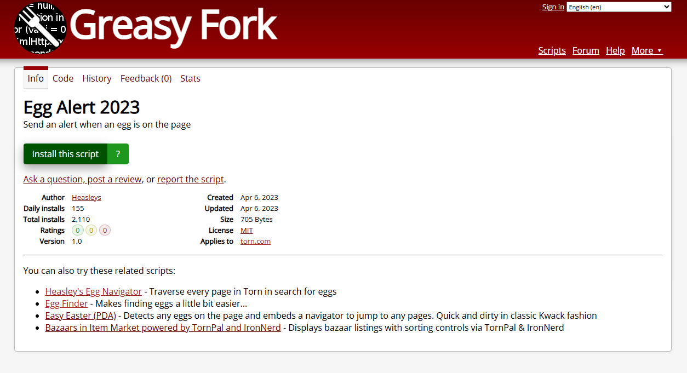
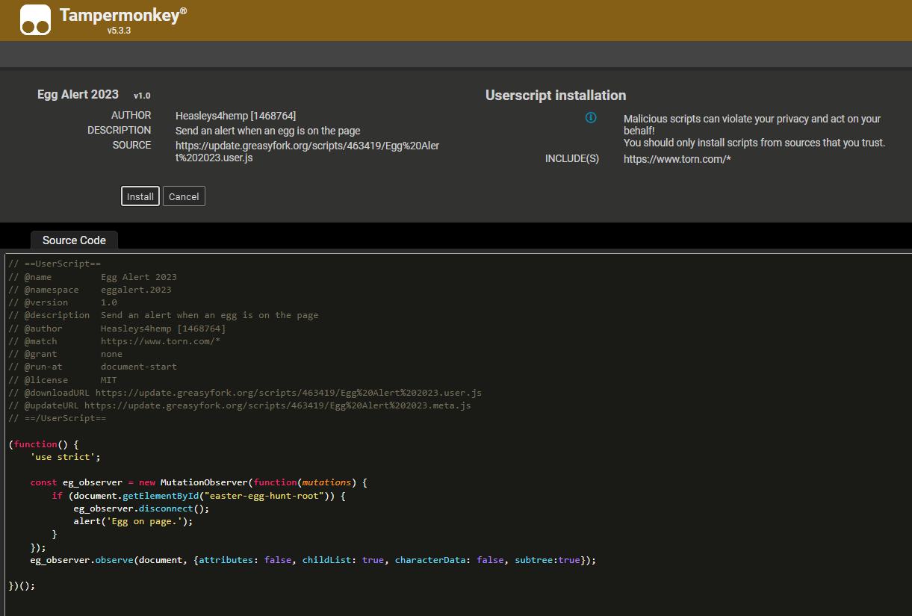

Install Tampermonkey & Scripts
Five-minute setup — Chrome · Edge · Firefox · Brave
Guide written by Skillerious
Five-minute setup — Chrome · Edge · Firefox · Brave
Guide written by Skillerious
Why Tampermonkey?
Install steps:
Power-user tips for GreasyFork:
Standard flow:
⚠️ Red warning banner? The script may be obsolete—check last update date & comments.
 | Action | How |
|---|---|
| Disable temporarily | Dashboard → click green toggle |
| Force update | Dashboard → ▼ → Check updates |
| Edit code | Dashboard → click script title |
| Remove script | Dashboard → 🗑 icon |
Tip: back-up your script list via Utilities › Export Zip before experimenting.
| Script | Description | Updated |
|---|---|---|
| Fast Revive | Two-tap hospital revives | 3 mo ago |
| Torn Attack Stats | Show enemy stats on attack page | Apr 2025 |
| Egg Finder | Highlight hidden eggs | Mar 2024 |
| Egg Navigator | Map egg locations | Mar 2025 |
| Crime Timer Plus | Track every cooldown | Feb 2025 |
Ensure Tampermonkey is enabled & not blocked. In Chrome: chrome://extensions → Details → Site access → “On all sites.”
https://www.torn.com.GreasyFork may be rate-limited. Wait or install from the script’s GitHub raw URL via Utilities › Install from URL.
Torn allows QOL scripts that don’t automate gameplay. Avoid auto-clickers or bots.